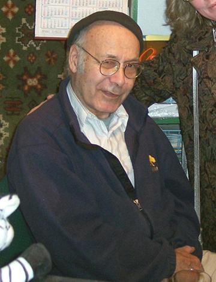

Alex was a long time member of Musica Donavania, and in years past, hosted many events. He will be missed by those of us who knew him.
Alex has not attended our events for several years, as declining health caused him to be confined to care facilities, and it was in one of these facilities that he passed today. His death did not involve COVID-19, but was related to multiple heart attacks and strokes over the past few years - and was very sudden.
I intend to place a page for Alex among the "In Memoriam" pages on the Clovegarden.com site, which also hosts the Musica Donavania pages.
Most of the time of Alex's participation in the group was during my 30 year banishment by Jon, so I don't have a lot of material to use. I would appreciate any material anyone would like to submit for inclusion on the page.
The current pages can be viewed at In Memoriam.
These pages are not obituaries, but celebrations of life, so material submitted can be realistic and not whitewashed. For any submitted material,or for any other communication regarding Alex, use the email address music@clovegarden.com.